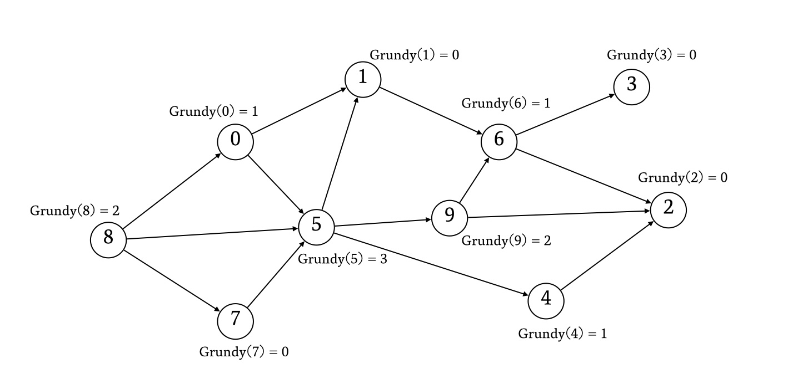
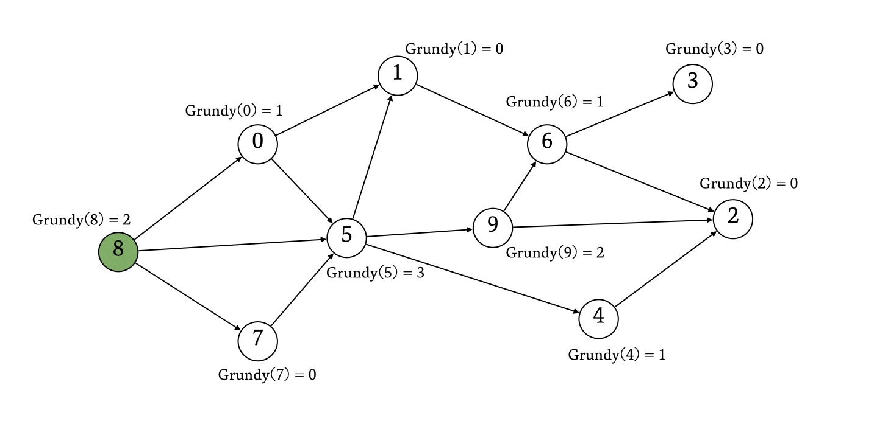
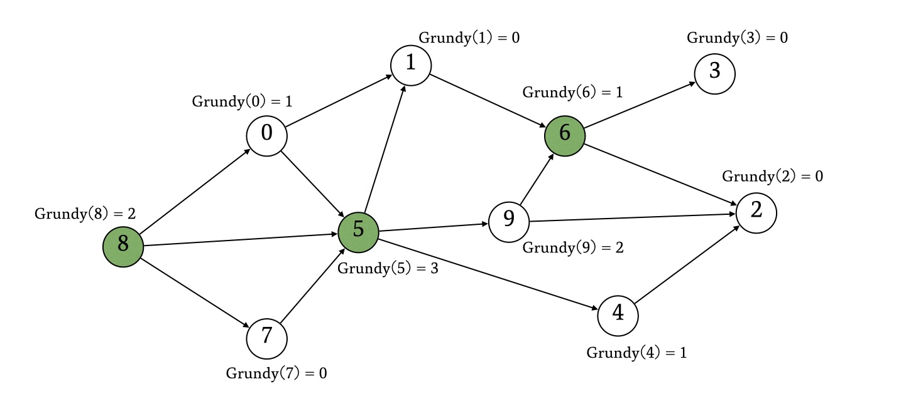

以下のゲームを Nim と言います。
コインの山が \(N\) 個あり、各山のコインの枚数は \(i\) 番目の山が \(a_i\) 枚です。A 君と B 君がお互いに以下の行動を交互に行います。
操作を繰り返し、最後のコインを取ったプレイヤーが勝者となります。A 君が先手で行動し、お互いが最適行動をとる時、どちらが勝ちますか。
結論から言うと、このゲームは勝者がどちらかを必ず判定することができるタイプのゲームです。そして、このゲームの結果は、コインの山の高さの総 XOR (bitwize XOR) が \(0\) かどうかで判別できるのです。
まずは山の個数が 1 つしか無い場合、必ず A 君(先手)が勝利します。なぜなら、A 君はコインを全部取れば良いのですから。このとき、山の高さの XOR は \(0\) ではありません。コインの山の個数が \(2\) つ以上の場合も同じで、XOR の値が \(0\) でなければ、A 君(先手)の勝利になります。
まず、プレイヤーの勝利条件は、プレイヤーの操作後にコインの枚数が全体で \(0\) 枚になることです。コイン枚数の全体の総和が \(0\) のとき、当然全体の Xor も \(0\) です。ここで、以下の事実に注目します。
\(1\) つ目の事実の証明は簡単です。一つの山からコインを何枚か取ってきたとき、その山のコイン枚数の bit は必ずどこかが変化するので、その桁を \(p\) 桁目とすると、コイン枚数の \(p\) 桁目が \(1\) の山の個数の偶奇が変わるため、総 Xor を \(0\) のままキープすることは不可能です。
\(2\) つ目の事実は、総 XOR のビットの最高位の \(1\) に注目して証明します。全てのコイン枚数の XOR の、最高位の \(1\) が \(p\) 桁目に登場するとします。このとき、コイン枚数の \(p\) 桁目が \(1\) である山が存在します。この山のビットは 1---... と表記することができます。ここで、この山から適切な枚数のコインを取り除くことで、\(p\) 桁目より下のビットを任意のビットパターン 0???... にすることができます。適切な枚数を引くことでこのビットパターンを残りの山の XOR と合わせることができ、全体の XOR を \(0\) にすることができます。
このように、事実 1 と事実 2 は成り立ちます。ここで、Nimの解法に戻ってみましょう。最初の状態のコインの山の総 Xor が \(0\) でない場合、先述の \(2\) つの事実を用いて以下の必勝パターンを得られます。
これらを繰り返すと、先手はいつかすべての山のコインの枚数が \(0\) の状態にできます。なお、最初の状態の総 Xor が \(0\) の時、総 Xor が \(0\ 以外の状態で後手に渡すので、後手が必勝になります。
先ほどの Nim はただのコイン取りゲームでしたが、Grundy の定理 を用いてより一般的なゲームを Nim の必勝法に帰着させることができます。ここで考えるのは、ゲームそのものに状態が存在するものです。先手と後手の操作の結果ゲームの状態が遷移し、ゲームの状態を終了状態することができたプレイヤーが勝利するゲームを考えます。
ここでは、ゲームの状態を有向グラフの頂点と対応づけて考えることで、このゲームをグラフの問題として考えます。このようにしたグラフの各頂点に対して、Grundy 数 を以下で定義します。
Grundy 数は上記の式によって簡単に計算することができます。再帰関数 & DP で計算しても良いですが、Grundy 数は無閉路有向グラフにしか定義できないので、トポロジカルソートの逆順に非再帰に計算していくこともできます。

ここで Grundy 数の式について説明しましたが、Grundy 数はどんな意味を持つのでしょうか。実は、ある状態(頂点)の Grundy 数は、Nim における山のコインの枚数と同じなのです。このゲームの最適な行動では、各頂点の Grundy 数から遷移を決定します。
Grundy 数の定義より、Grundy 数が \(X\) であるような状態からは、必ず Grundy 数が \(X\) 未満であるような状態に遷移できます。この点においては、コインが \(X\) 枚の山から \(1\) 枚以上コインを取る操作と同じです。Nim との差異は、Grundy 数が \(X\) の状態から、Grundy 数が \(X\) より大きい状態にも遷移可能な点です。
しかし、直感的に考えて、Grundy 数が \(X\) の状態から、Grundy 数が \(X\) よりも大きい状態への移動を行なっても嬉しくないことがわかるかと思います。Grundy 数に注目して遷移を決定する前提では、このような遷移の結果、相手の選択肢が自分よりも多くなることになります。よってこのような遷移を考える必要はなく、Nim の操作と全く同じものに対応すると考えることができます。
上記のことを考えると、例えば先述のグラフで頂点 \(8\) から状態遷移を行うゲームでは、\(\mathrm{grundy}(8)\) の値を見て結果を判別することができます。

また、複数の状態が対象であり、\(1\) 操作ごとにどれか \(1\) つの状態が変化するゲームにおいては、それらの状態の Grundy 数の総 XOR をみて結果を判別することができます。ここも Nim と同様です。

例えば上記のゲームは先手が負けます。